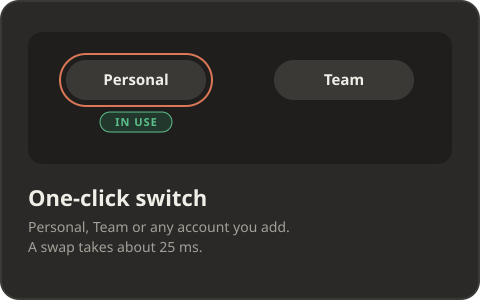
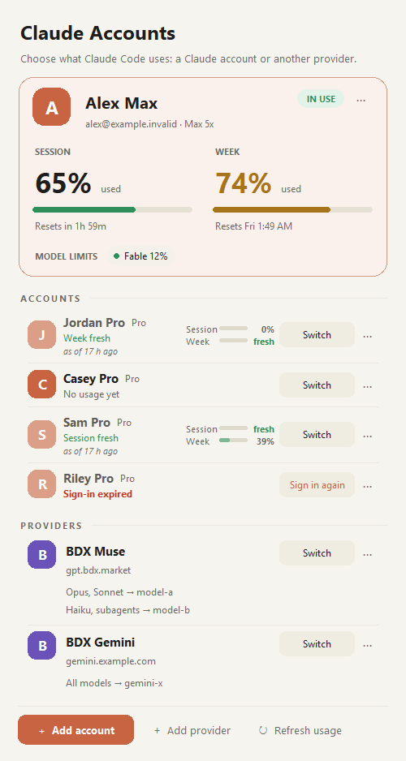
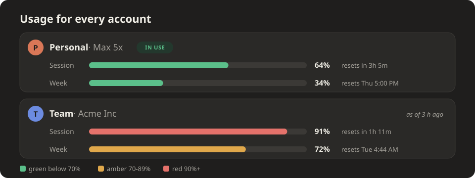

- Windows
- VS Code
- MIT
- Python 3.9+
Switch Claude Code between your own accounts in one click
CCSwitcherX is a free, open-source Windows tool that keeps each of your Claude logins saved and swaps the right one in when you pick it. It works from a small window and a VS Code status bar, and it is unofficial and not affiliated with Anthropic.

Why
Claude Code signs in to one account at a time, so moving between a personal plan and a work Team plan normally means signing in again. CCSwitcherX backs up each login and puts the chosen one back in a fraction of a second. Skills, CLAUDE.md, memory, MCP logins and chat history stay shared by every account.
Features
Four parts that do one job each: switching, usage, the VS Code status bar and the safety checks.

Switch in one click
Pick the account in the window or the status bar. The swap itself takes a fraction of a second.

Usage for every account
The 5-hour Session and 7-day Week percentages, with reset times, for each saved login. Accounts you are not using are read live too.

Status bar and picker in VS Code
The active account and its usage show in the status bar. Click it to choose another account.

Encrypted, backed up, self-checked
Saved logins use Windows DPAPI. Every switch backs up the current login first, and a self-check verifies the setup.
The window, new in 1.3.0
The account in use gets a large panel. Every other account is a compact row, sorted by how much room it has left.

- Account in useSession and week usage in big numbers, reset times and model limits, in one panel.
- Rows sorted by room leftEach other account shows a clear status: Room left, Full until a time, Session fresh or Sign in again. Names that are too long end in an ellipsis, and numbers older than 15 minutes are dimmed and labelled with their age.
- Live usage for accounts not in useAn expired access token is renewed the way Claude Code does and saved back into that saved account, so its numbers are current instead of hours old. The account in use is left to Claude Code.
- Plan changes show upAn upgrade such as Pro to Max 5x appears after the next usage refresh, without signing in again.
- Safer switchingA switch re-reads the saved account under Claude Code's lock files, so it never applies a sign-in that a renewal has just replaced.
Fictional accounts, shown in the system light or dark theme.
How it works
A switch replaces two entries in Claude Code's login files.

- Add each account once. Add account runs Claude Code's own browser sign-in and saves the result under a name you choose.
- Saved logins are encrypted. Each login is stored with Windows DPAPI, so only your Windows user can read it.
- Switch swaps two entries.
claudeAiOauthandoauthAccountare replaced while Claude Code's lock files are held. A real swap measured 21 to 27 ms.
Status bar
The VS Code status bar shows which account Claude Code is using, so you never have to guess.

Usage at a glance
Bars are green below 70%, amber from 70% to 89%, and red from 90%. A window that has already rolled over shows "reset".

Command line
The same engine runs from a terminal with claude_accounts.py: list, status, switch, usage, add, save, rename, remove, doctor and --json.

Install
Three commands in PowerShell. The installer copies the program, adds the Start Menu shortcut, installs the VS Code extension and runs the self-check.
-
Clone the repository
$ git clone https://github.com/MHJoy99/CCSwitcherX -
Open the folder
$ cd CCSwitcherX -
Run the installer
$ powershell -ExecutionPolicy Bypass -File scripts\install.ps1
Requirements
- Windows 10 or Windows 11
- Python 3.9 or newer (tested on 3.11), standard library only, no pip packages
- Claude Code, either the command line or the VS Code extension
- Git to clone the repository (or the ZIP download from GitHub), and Windows PowerShell, which ships with Windows, to run the installer
Safety and privacy
The tool moves only the login, and only on your own computer.
- Encrypted loginsSaved logins are encrypted with Windows DPAPI and can be read only by the current Windows user.
- No server, no telemetryThe only network calls are Claude Code's own browser sign-in, read-only usage and plan requests and, for a saved account with an expired token, a token renewal, all made with your own tokens.
- Backup and rollbackEach switch backs up the current login, keeps a recovery journal, and rolls back if a file write fails.
- Only the login changesSkills, CLAUDE.md, memory, MCP logins and chat history are shared and untouched.
How it compares
Other tools use the same basic technique. They differ in platform and interface.
| Tool | Platform | Interface |
|---|---|---|
| CCSwitcherX | Windows 10 and 11 | Window and VS Code status bar |
| claude-swap | macOS, Linux, Windows | Terminal, TUI, macOS menu bar |
| CCSwitcher | macOS | Menu-bar app |
Same basic technique, different needs.
FAQ
Short answers to the questions people ask most.
What is CCSwitcherX?
CCSwitcherX is a free, open-source (MIT) Windows tool that switches the Claude Code login between your own saved accounts, for example a personal Max plan and a work Team plan, in one click. It has a small window and a VS Code status-bar extension, and it needs nothing beyond Python 3.9 or newer.
How do I switch between a personal and a Team Claude account in VS Code?
Install CCSwitcherX, sign in to each account once with Add account, then click the account name in the VS Code status bar and pick the other account. The swap takes a fraction of a second and VS Code does not need a restart. Open Claude Code chats pick up the new account on their next message; if one does not, start a new chat.
Do I have to log in again every time I switch?
No. You sign in once per account. CCSwitcherX keeps each login encrypted on your PC and puts the right one back when you switch. A saved login stays valid for about 28 days from the last time it was refreshed, so use each account at least once in that time. The window warns you when a saved login is within 7 days of expiring.
Is it safe? Where are my logins stored?
Saved logins are encrypted with Windows DPAPI, so only your Windows user account on that PC can read them. They never leave your computer: CCSwitcherX has no server and no telemetry. Before every switch it backs up the current login, keeps a recovery journal in case of a crash, and rolls back if a file write fails.
Does switching change my Claude Code settings, skills, memory or chat history?
No. Only the login is swapped: the claudeAiOauth entry in ~/.claude/.credentials.json and the oauthAccount entry in ~/.claude.json (plus one cached flag that Claude Code recreates by itself). Skills, CLAUDE.md, memory, MCP logins and chat history are shared by every account.
Can I see usage for each account?
Yes. The window and the status bar show the 5-hour session and 7-day weekly usage with reset times. The active account's numbers come from Claude Code itself. Accounts not in use are read live too: when a saved account's short-lived access token has expired, the app renews it exactly like Claude Code does and saves the new tokens back into that saved account. The account in use is left to Claude Code. If the server refuses a saved sign-in, the card says to sign in again.
Does it show usage for accounts I'm not using?
Yes. Accounts you are not using are read live: when a saved account's short-lived access token has expired, the app renews it the way Claude Code does and saves the new tokens back into that saved account, so its numbers are current instead of hours old. The account in use is left to Claude Code. If the server refuses a saved sign-in, that account shows Sign in again, and numbers older than 15 minutes are dimmed and labelled with their age.
Will a plan upgrade, such as Pro to Max, show up?
Yes, for accounts you are not using. When usage is refreshed (at most every 30 minutes per account), the app also re-checks the account's plan with its saved sign-in, so an upgrade such as Pro to Max 5x appears on its row without signing in again. The account in use keeps the plan details Claude Code itself maintains.
Is it safe to switch while it is refreshing?
Yes. A switch re-reads the saved account under Claude Code's own lock files, so if the app was renewing that same account a moment earlier, the switch uses the newest saved sign-in and never one that was already replaced. An end-to-end test with a fake token server covers renewal, token rotation, a switch during a slow renewal, ten fast switches and switching back.
Is this allowed by Anthropic?
CCSwitcherX is unofficial and not affiliated with Anthropic. It only switches between your own accounts on your own computer, and your prompts are still sent by the real Claude Code, not by CCSwitcherX. Anthropic's Consumer Terms do not allow you to share your login or make your account available to anyone else, so do not use it for shared accounts. To show usage and plan, the app reads them from Anthropic's servers with the saved sign-in and renews expired access tokens the way Claude Code does. Use it at your own risk and check Anthropic's terms for your plan.
Which platforms and versions does it support?
Windows 10 and 11 with Python 3.9 or newer (tested on Python 3.11). It works with the Claude Code command line and the Claude Code VS Code extension. macOS and Linux are not supported yet because the encryption uses Windows DPAPI.
Is CCSwitcherX an official Anthropic tool?
No. CCSwitcherX is independent and unofficial. Claude and Claude Code are trademarks of Anthropic. It only moves your own login between your own accounts on your own computer; check Anthropic's terms for your plan.
Does it work with Claude Pro, Max and Team accounts?
It is built for claude.ai subscription logins (Pro, Max and Team) and does not manage API keys. It has been tested with real Max and Pro accounts; Team accounts use the same login format.
How do I add an account?
Open Claude Accounts and click Add account, then sign in with the account in the browser tab that opens (choose Switch account on that page if it shows the wrong one) and give it a name. Your previous login is saved automatically first, and cancelling puts it back.
How is CCSwitcherX different from claude-swap and CCSwitcher?
They use the same basic technique: back up each account's login and swap it in. CCSwitcherX is Windows-first with a graphical window and a VS Code status bar, encrypts saved logins with Windows DPAPI, shows usage for each account and ships with a self-check. claude-swap is cross-platform with terminal tooling and automatic rotation, and CCSwitcher is a macOS menu-bar app.
Does it work with CCUsageX?
Yes. CCUsageX reads your Claude Code chat history and Claude Code's own usage report, and both follow the active account, so its plan-limit card shows the account you switched to. Its cost and token totals combine all accounts, because chat history does not record which account was used.
What happens if I stop using CCSwitcherX?
Nothing breaks. Claude Code keeps using whichever account was active last. Uninstall with scripts/uninstall.ps1; your saved logins are kept unless you ask to remove them.